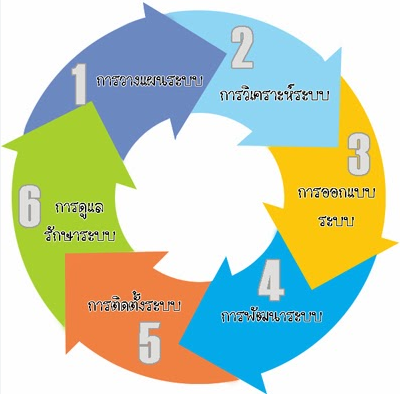
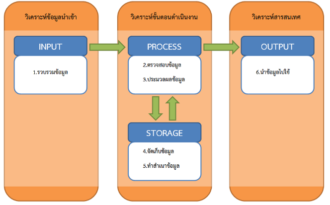
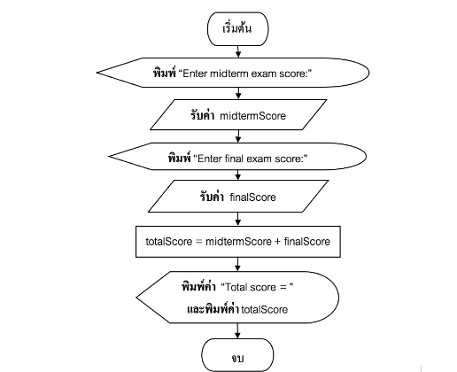
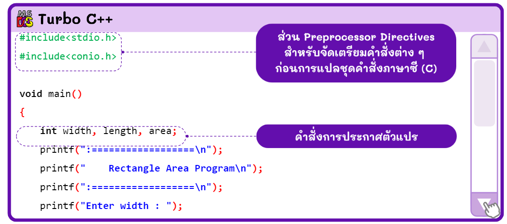

ลำดับขั้นตอนการเขียนโปรแกรม
การพัฒนาโปรแกรมจำเป็นต้องทำตามลำดับขั้นตอนอย่างเป็นระบบ ไม่ควรข้ามขั้นตอนใดขั้นตอนหนึ่ง
-
วิเคราะห์ปัญหา (Analysis)
ทำความเข้าใจว่าโจทย์ต้องการอะไร ต้องรับข้อมูลอะไร และต้องการผลลัพธ์แบบใด -
ออกแบบโปรแกรม (Design)
วางแผนการทำงานของโปรแกรม โดยใช้ผังงาน (Flowchart) หรือรหัสลำลอง (Pseudocode) -
เขียนโปรแกรม (Programming)
ลงมือเขียนโค้ดด้วยภาษาคอมพิวเตอร์ เช่น C, Python -
ทดสอบโปรแกรม (Testing)
ตรวจสอบข้อผิดพลาด (Bug) และแก้ไขให้โปรแกรมทำงานถูกต้อง

จุดที่มักออกสอบ: การเรียงลำดับขั้นตอนการพัฒนาโปรแกรม
การวิเคราะห์ข้อมูล (Input – Process – Output)
-
Input (ข้อมูลนำเข้า):
ข้อมูลที่ต้องป้อนเข้าสู่โปรแกรม เช่น ฐาน และ ความสูง -
Process (การประมวลผล):
การคำนวณหรือขั้นตอนการทำงาน เช่น (1/2) × ฐาน × สูง -
Output (ข้อมูลส่งออก):
ผลลัพธ์ที่ได้จากการประมวลผล เช่น พื้นที่สามเหลี่ยม

จุดที่มักออกสอบ: แยก Input / Process / Output จากสถานการณ์ที่กำหนด
การออกแบบด้วยผังงาน (Flowchart)
ผังงาน คือการใช้สัญลักษณ์รูปภาพแทนลำดับขั้นตอนการทำงานของโปรแกรม เพื่อให้เข้าใจง่ายและตรวจสอบความถูกต้องได้สะดวก
- ประโยชน์: เห็นลำดับงานชัดเจน และหาข้อผิดพลาดได้ง่าย
- ข้อควรระวัง: กราฟแท่งหรือกราฟเส้น ไม่ใช่เครื่องมือออกแบบโปรแกรม
โครงสร้างการทำงานของโปรแกรม
-
แบบเรียงลำดับ (Sequence):
ทำงานจากบนลงล่างตามลำดับขั้นตอน -
แบบเลือกทำ (Selection):
มีการตรวจสอบเงื่อนไขก่อนตัดสินใจ -
แบบทำซ้ำ (Loop):
ทำงานซ้ำ ๆ จนกว่าเงื่อนไขจะเป็นเท็จ

พื้นฐานภาษาซี (C Language)
- การแสดงผล: ใช้คำสั่ง
printf - การรับข้อมูล: ใช้คำสั่ง
scanf - สัญลักษณ์สำคัญ: ชุดคำสั่งต้องอยู่ใน { }
-
การแปลภาษา:
ต้องทำการ Compile เพื่อแปลเป็นภาษาเครื่อง

ลักษณะของโปรแกรมที่ดี
-
ความยืดหยุ่น (Flexibility):
ปรับปรุงและแก้ไขได้ง่าย -
ผ่านการทดสอบ (Testing):
ตรวจสอบความถูกต้องก่อนนำไปใช้งานจริง